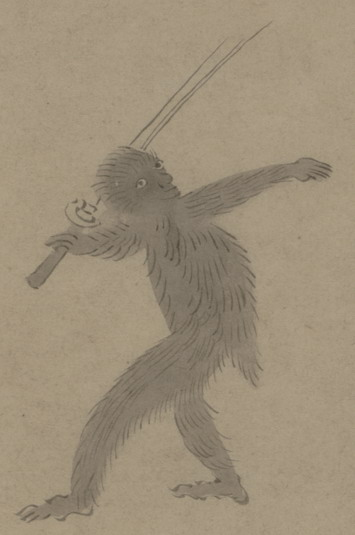

剣を持った化物。全身が薄黒い毛皮で覆われており、獣の変化と考えられる。片手に剣を持ち、両腕を広げて、歩いている。
出典：親書誌：U426_nichibunken_0150：付喪神絵詞；ツクモガミエコトバ／日付：2010／資源識別子：U426_nichibunken_0150_0051_0000
Copyright (c)2010- International Research Center for Japanese Studies, Kyoto, Japan. All rights reserved.